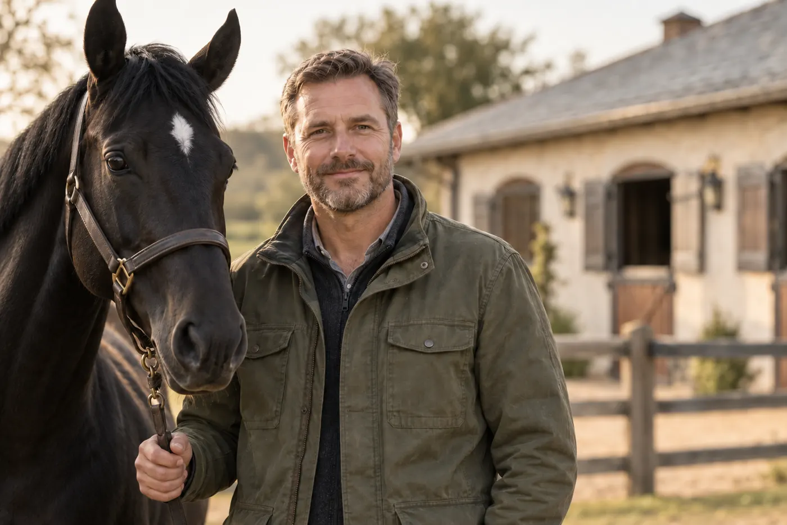
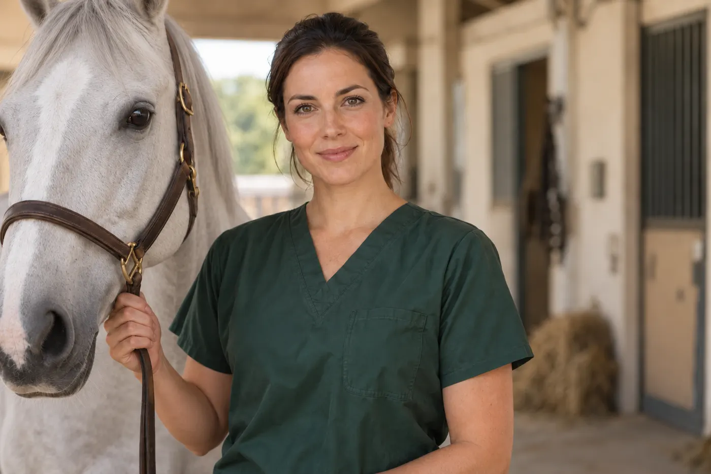

Veterinární lékař
Zdraví koně v souvislostech
Od první konzultace po následnou kontrolu. Důraz na přesné vyšetření a srozumitelné vysvětlení dalšího postupu.
Domluvit konzultaciLidé, kteří rozumí koním.
Péče, které můžete důvěřovat.
Zdraví koně v souvislostech
Od první konzultace po následnou kontrolu. Důraz na přesné vyšetření a srozumitelné vysvětlení dalšího postupu.
Domluvit konzultaci
Blízko vašemu koni
Vyšetření v důvěrně známém prostředí a spolupráce s majitelem při plánování návštěvy.
Domluvit konzultaci
Navazující odborná péče
Když stav koně vyžaduje specializované vyšetření, pomůžeme vám zorientovat se v dalším postupu.
Domluvit konzultaci